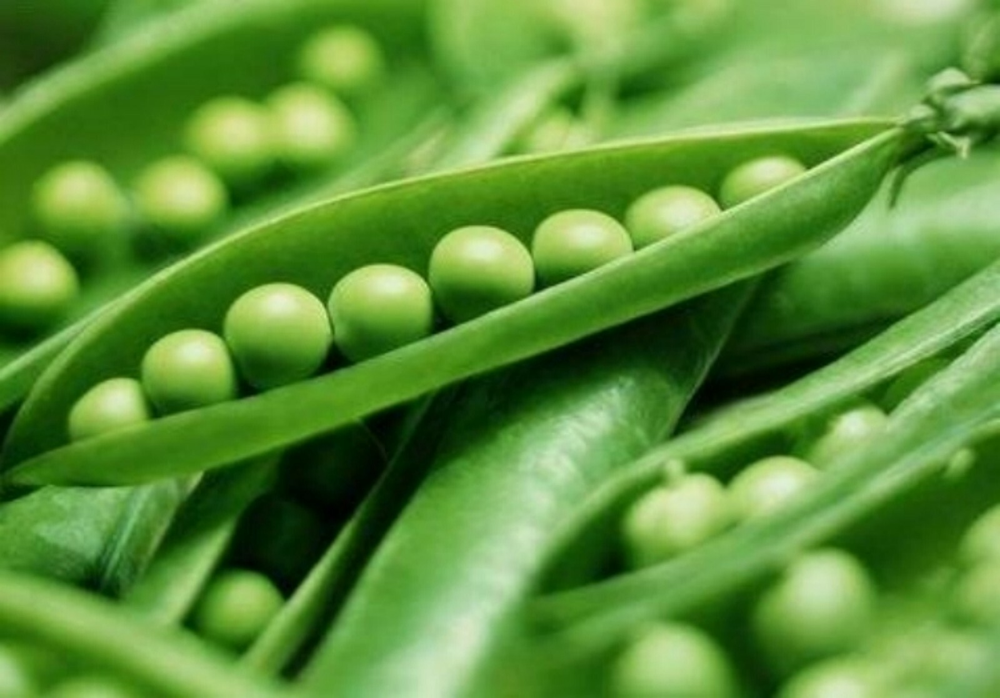

Горох относится к семейству Бобовые и является одной из древнейших сельскохозяйственных культур. Используется как пищевое и кормовое растение.
Горох богат белком и является важным элементом здорового питания.
Ранней весной после прогревания почвы.
С июня по август.
Содержит растительный белок, клетчатку, витамины и микроэлементы.
Россия, Германия, Франция, Польша и другие страны Европы.
Предпочитает умеренный климат и достаточное увлажнение.